א טיפער וועגווייזער פאר׳ן אייגנטימער
2026 HondaCR-V EX
דער גאנצער וועגווייזער צום 2026 Honda CR-V EX, אויף אידיש
דער בוך באהאנדלט נאר איין קאר: דעם 2026 Honda CR-V EX. ער וויל אייך העלפן קענען דעם קאר אזוי ווי א Honda טעכניקער קען אים, מיט יעדן קנעפל, יעדן סקרין, יעדע סערוויס-זאך און יעדע גרעניץ. Honda'ס מעלדונג ביים ארויסגעבן דעם 2026 מאדעל רופט דעם CR-V דעם מערסט-פארקויפטן SUV אין אמעריקע אין די לעצטע 25 יאר. ער איז אויך דער מערסט-פארקויפטער crossover אין אמעריקע זינט 1997, און ער איז געווען דער מערסט-פארקויפטער Honda קאר יעדעס יאר זינט 2017. דער CR-V איז א קאמפאקטער SUV, געבויט צו זיין פראקטיש, שפארעוודיג מיט בענזין און באקוועם. דער EX איז א גוט-אויסגעשטאטעטע ווערסיע דערפון.
30 קאפיטלען
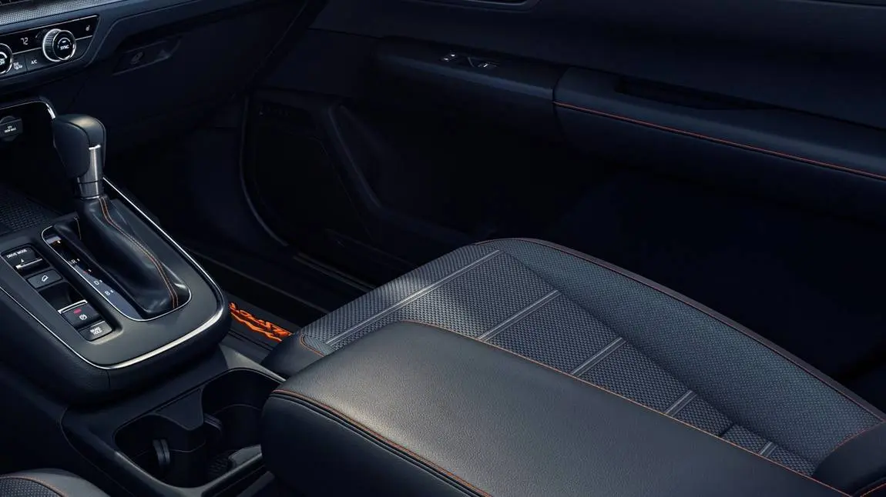
1קאפיטל 1איינפירונג10 טיילן · זייטן 10–22- 2קאפיטל 2די גאנצע אויסערליכע טור10 טיילן · זייטן 23–42
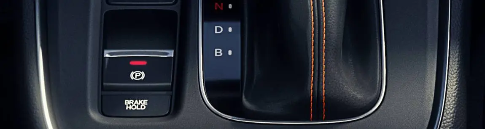
3קאפיטל 3מאטאר און מעכאנישע סיסטעמען12 טיילן · זייטן 43–56 4קאפיטל 4בענזין און בענזין-עקאנאמיע10 טיילן · זייטן 57–67
4קאפיטל 4בענזין און בענזין-עקאנאמיע10 טיילן · זייטן 57–67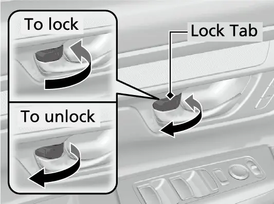
5קאפיטל 5די גאנצע אינערליכע טור10 טיילן · זייטן 68–87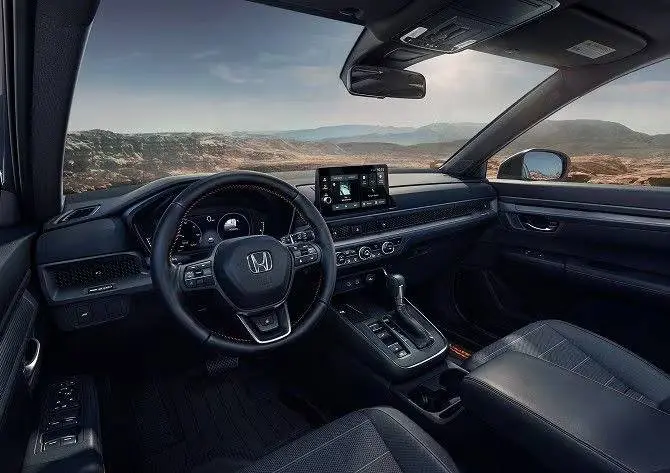
6קאפיטל 6דער דרייווערס קאקפיט און דעשבארד19 טיילן · זייטן 88–112 7קאפיטל 7אינפאטעינמענט און טאטש-סקרין16 טיילן · זייטן 113–134
7קאפיטל 7אינפאטעינמענט און טאטש-סקרין16 טיילן · זייטן 113–134- 8קאפיטל 8פארבינדן דעם גוגל פיקסל 9a10 טיילן · זייטן 135–146
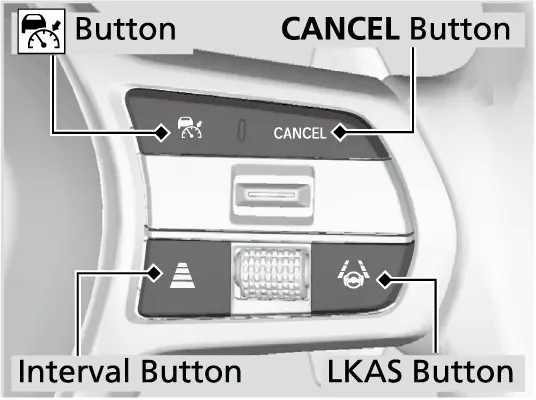
9קאפיטל 9האנדא סענסינג און דרייווער-הילף16 טיילן · זייטן 147–172 10קאפיטל 10ליין-קיפינג, שטארקער רעגן און שלעכטע זעאונג12 טיילן · זייטן 173–184
10קאפיטל 10ליין-קיפינג, שטארקער רעגן און שלעכטע זעאונג12 טיילן · זייטן 173–184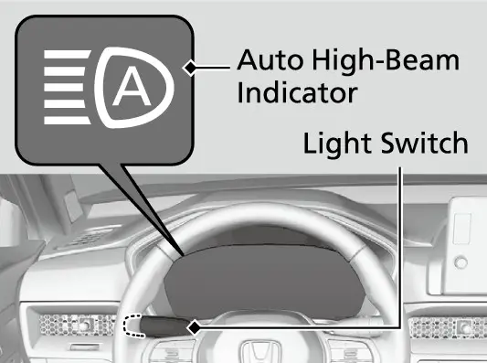
11קאפיטל 11ליכט און זעאונג10 טיילן · זייטן 185–197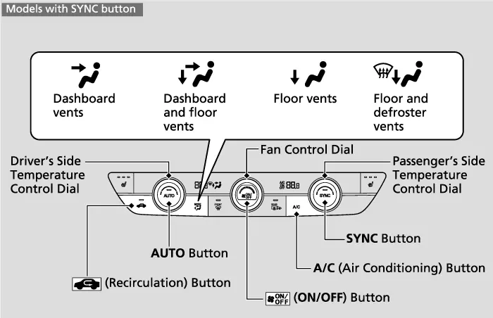
12קאפיטל 12קליימעט קאנטראל11 טיילן · זייטן 198–208 13קאפיטל 13זיצן און באקוועמליכקייט10 טיילן · זייטן 209–222
13קאפיטל 13זיצן און באקוועמליכקייט10 טיילן · זייטן 209–222 14קאפיטל 14דרייוו-מאודס און פירן דעם קאר13 טיילן · זייטן 223–246
14קאפיטל 14דרייוו-מאודס און פירן דעם קאר13 טיילן · זייטן 223–246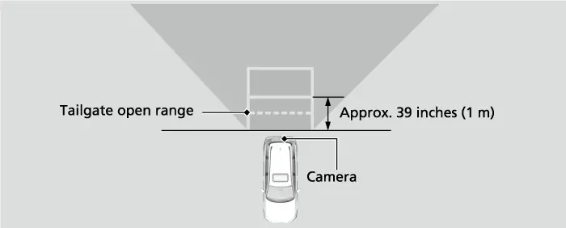
15קאפיטל 15פארקירן און פאמעליכע מאנעווערס9 טיילן · זייטן 247–257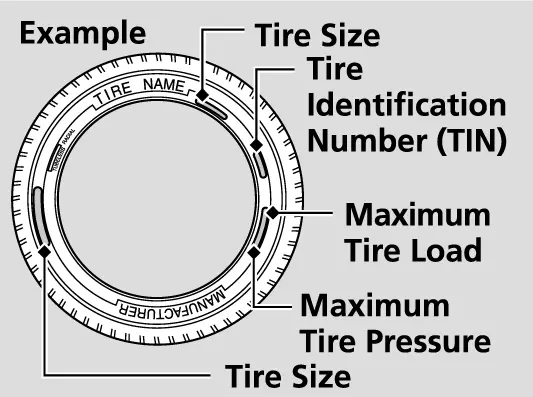
16קאפיטל 16רעדער און לופט-דרוק11 טיילן · זייטן 258–269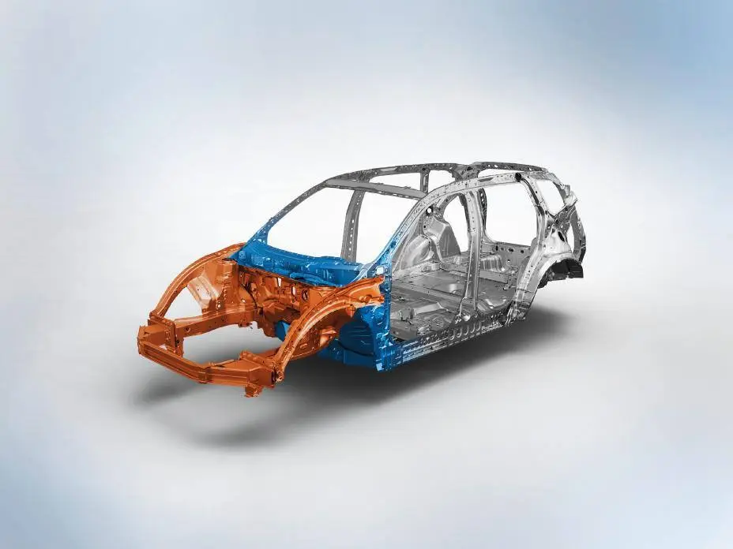
17קאפיטל 17ברעמזן און זיכערהייט12 טיילן · זייטן 270–283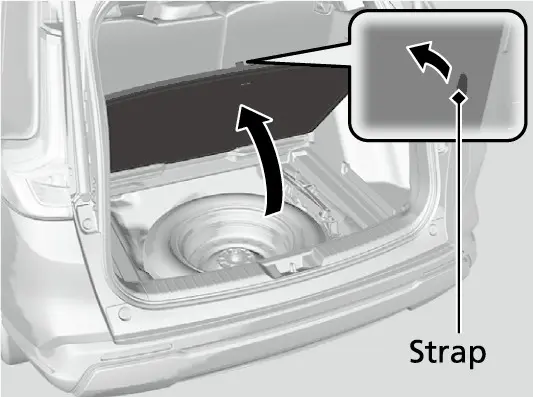
18קאפיטל 18נויטפאל סיטואציעס13 טיילן · זייטן 284–301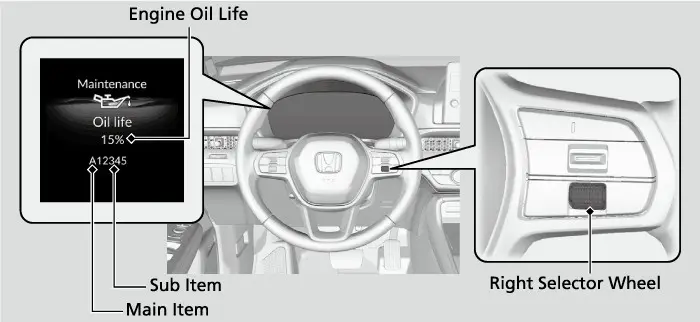
19קאפיטל 19אויפהאלטונג און סערוויס15 טיילן · זייטן 302–321 20קאפיטל 20באטעריע און עלעקטרישע סיסטעם9 טיילן · זייטן 322–332
20קאפיטל 20באטעריע און עלעקטרישע סיסטעם9 טיילן · זייטן 322–332 21קאפיטל 21דער שליסל-פאב און זיכערהייט13 טיילן · זייטן 333–345
21קאפיטל 21דער שליסל-פאב און זיכערהייט13 טיילן · זייטן 333–345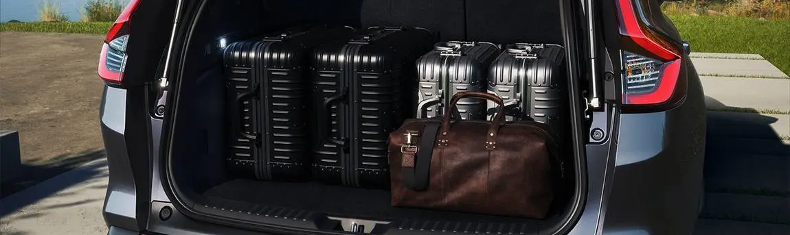
22קאפיטל 22לאסט-פלאץ און פראקטישקייט10 טיילן · זייטן 346–355- 23קאפיטל 23סאפטוועיר, אפדעיטס און פארבינדונג9 טיילן · זייטן 356–363
- 24קאפיטל 24ווינטער, זומער, רעגן און נאכט10 טיילן · זייטן 364–372
 25קאפיטל 25הייוועי און שטאט פארן10 טיילן · זייטן 373–386
25קאפיטל 25הייוועי און שטאט פארן10 טיילן · זייטן 373–386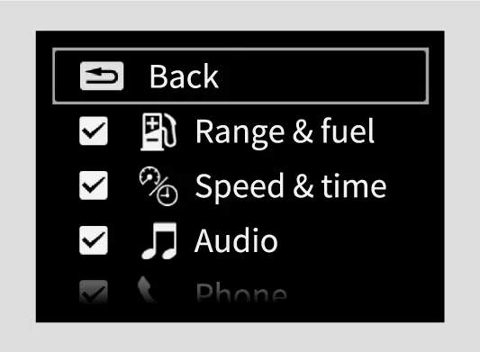
26קאפיטל 26באהאלטענע און ווייניג-באקאנטע פיטשורס9 טיילן · זייטן 387–397- 27קאפיטל 27אפטע טעותים און טראבלשוטינג9 טיילן · זייטן 398–407
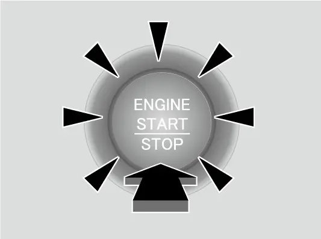
28קאפיטל 28קאמפלעטע קנעפל-ביי-קנעפל רעפערענץ17 טיילן · זייטן 408–424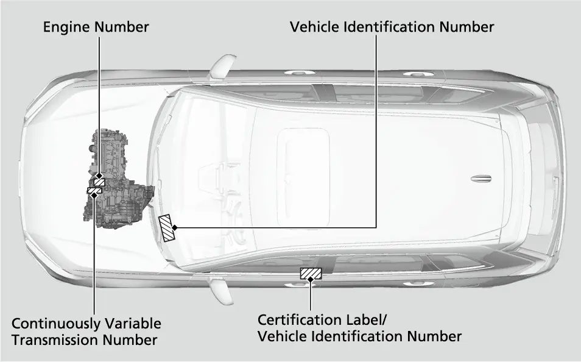
29קאפיטל 29אמת'ע אייגנטום13 טיילן · זייטן 425–435- 30קאפיטל 30די סוף איבערזיכט, טשעקליסטס און מקורות11 טיילן · זייטן 436–445
6 צוגאבן
- Aצוגאב Aספעציפיקאציעס, פליסיגקייטן און קאפאציטעטן4 טיילן · זייטן 446–454
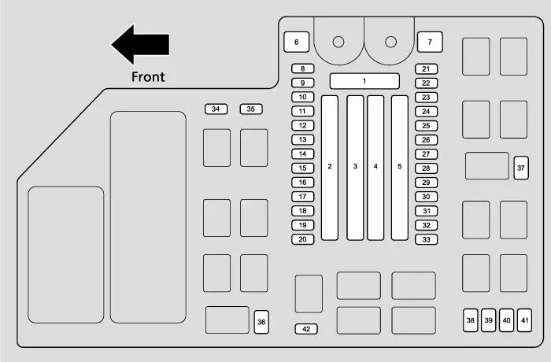
Bצוגאב Bפיוז טשארטס5 טיילן · זייטן 455–463- Cצוגאב Cווארענונג- און אינדיקאטאר-לעמפלעך6 טיילן · זייטן 464–477
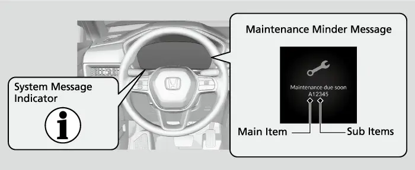
Dצוגאב DMaintenance Minder רעפערענץ6 טיילן · זייטן 478–481- Eצוגאב Eגלאסאר2 טיילן · זייטן 482–487
- Fצוגאב Fמקורות און בילדער-קרעדיטן3 טיילן · זייטן 488–488